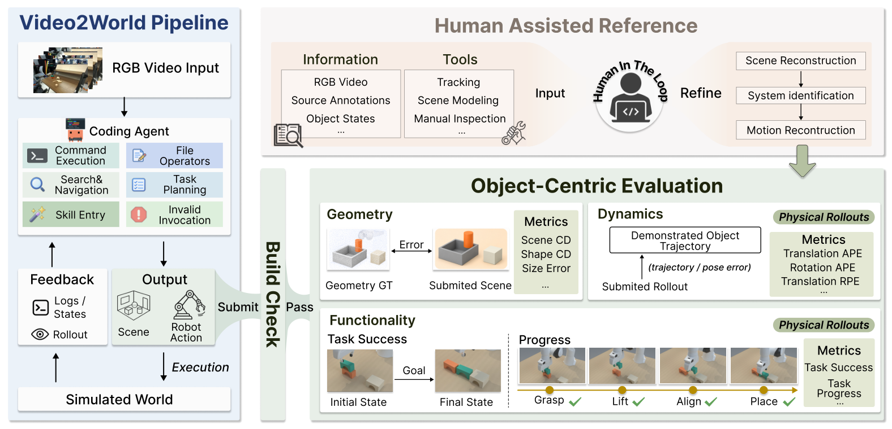
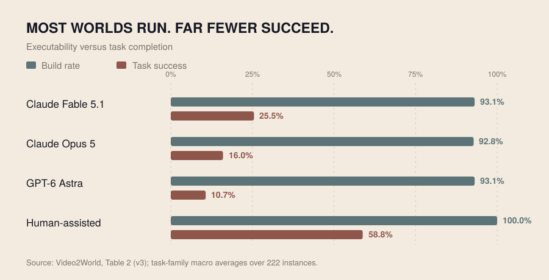
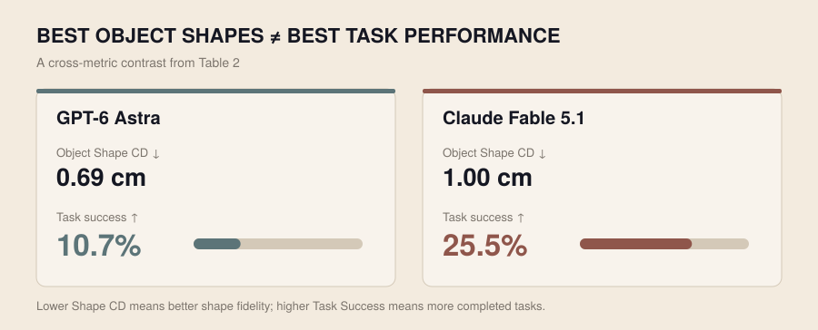
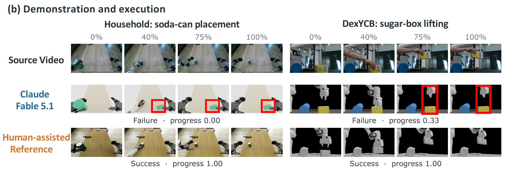
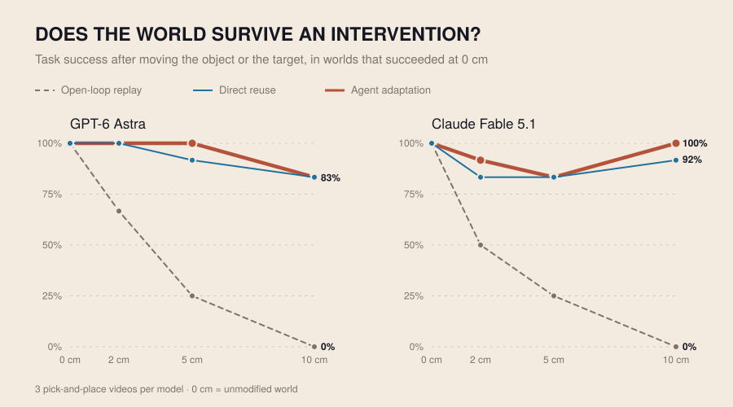

We give a coding agent one video of a manipulation task and ask it to write a simulator in which a robot can redo that task. Three findings:
1The simulators run, but rarely work.
Best agent (Claude Fable 5.1) on 222 tasks.
2Accurate shapes are not enough.
Astra reconstructs object shapes more accurately (0.69 vs. 1.00 cm error), yet completes fewer tasks.
3Working worlds hold up when things move.
Object or target moved 10 cm, in worlds that worked before the move (new experiment, §05).
01A Video Is an Observation. A World Must Answer “What If?”
Embodied AI needs data from interacting with the physical world. Simulation can supply that data at scale, but building a useful environment is still slow, skilled work: someone has to recover object shapes, assemble the scene, set physical properties, calibrate coordinates, and write the robot's controls. A video shows what happened. It leaves out almost everything a simulator needs to make it happen again.
Judea Pearl's ladder of causation makes the gap precise. It separates three kinds of questions. Seeing: what usually comes next, given what I observe? Doing: what happens if I act? Imagining: what would have happened if things had been different? A demonstration video sits on the first rung: a single sample of one trajectory under one set of conditions. A simulator is useful precisely because it answers questions on the second and third rungs.
A video tells you what happened. A world has to tell you what would happen if.
Formally, given a video \(V\), a target simulator \(\mathcal{S}\) and general-purpose tools \(\mathcal{L}\), the agent \(\mathcal{A}\) writes a program \(P = (\eta, \pi)\). The scene specification \(\eta\) fixes the variables: which objects exist, their shapes, poses, masses and frictions. The simulator dynamics \(F_\eta\) map a state and an action to the next state. The behavior \(\pi\) issues the robot's commands. Executing \(P\) unrolls a trajectory:
Read this way, a reconstruction is a structural causal model of the demonstrated scene: \(\eta\) sets the exogenous conditions, \(F_\eta\) the structural equations, and \(\pi\) is the only channel through which anything acts on it.
![Time-unrolled causal graph. The agent writes two pieces of code: the scene η, which sets the initial object state and the dynamics of every step, and the behavior π, which picks each robot action from the states so far. Object states x0, x1, x2, …, xH and actions u0, u1 form the rollout between them. A dashed arrow from the code straight to an object state is crossed out. An intervention do(move object) edits η. An evaluator column links geometry to η, dynamics to the object-state trajectory, and function to the whole rollout of states and actions.](img/causal_world.svg)
Many worlds fit one video
Recovering such a model from one observation is fundamentally underdetermined. A cup that was lifted smoothly could be light with a gentle grasp or heavy with a firm one. A bowl seen from one viewpoint could be a few millimeters wider or shallower than it looks. A peg that slid in could have had generous clearance or almost none. These worlds are observationally equivalent but interventionally different: they agree on the recorded trajectory and disagree on what happens when the robot acts.
So fitting the footage is not enough. A good reconstruction has to climb the ladder: reproduce what was seen, let the robot cause what was seen, and keep behaving correctly when something changes. The rest of this post follows that ladder: the benchmark that poses the problem (§02), the tests that check each rung (§03), how far today's agents get (§04), and what happens at the top rung (§05).
02The Benchmark: One Clip In, One Executable World Out
For each instance the agent receives the source video, the designated simulator and robot interface, public documentation and resources, and general coding tools. It does not receive the source scene geometry, the ground-truth object trajectories, or the private task specification; otherwise the benchmark would measure how faithfully an agent copies a given model, not whether it can infer one.
Within those limits the agent works like an experimental scientist with a single recording of reality. It watches the clip, reads the simulator interface, writes a candidate scene and behavior, runs it, watches what happens, and revises. Every run is an intervention on the agent's own hypothesis world; none is an intervention on the real scene, and none of the hidden annotations ever comes back as feedback. The submitted program is then frozen and executed by the evaluator.

Video2World pairs demonstration videos with target simulator configurations and hidden object-centric annotations. One source clip can yield several reconstruction instances when different robot embodiments or control interfaces are required.
The tasks span furniture assembly, rigid-object pick-and-place, human hand interactions, dual-arm tasks, household manipulation, and contact-rich pushing and deformable-object tasks. Some reward accurate placement; others need tight geometric tolerances, stable grasps, or correctly ordered contacts, which is exactly where the unobserved variables matter most.
| Video source | Families | Clips | Instances |
|---|---|---|---|
| FurnitureBench | 9 | 64 | 64 |
| DROID | 2 | 20 | 20 |
| Human videos (HOI4D, HOT3D, DexYCB, OakInk2) | 8 | 33 | 66 |
| RoboDojo | 2 | 25 | 25 |
| In-house household | 15 | 37 | 37 |
| Reconstructed digital twins | 3 | 10 | 10 |
| Total | 39 | 189 | 222 |
Source-group totals from the paper's Table A8 and 39 family assignments (Appendix 8.2). The 33 human videos each produce an arm-targeted and a hand-targeted reconstruction, giving 66 instances. Related windows from longer recordings are counted as separate clips.
The human videos make the causal reading concrete. In the source clip the cause is a human hand; in the simulator it must be a robot. What must transfer is therefore not the actor's joint angles but the effect on the objects and the mechanism that produced it: grasp, lift, insert, release. That is why Video2World defines success on object-centric conditions under a designated robot embodiment. The task is a property of the scene's causal structure, and it should not change with who performs the intervention.
Video2World in 90 seconds
03Evaluation as a Ladder
Each rung asks a harder question about the submitted program, and each is checked against held-out annotations the agent never sees. Before any of them, the authored package must build and run.
Rung 1 · Seeing: does the world reproduce what was observed?
Geometry compares the scene specification \(\eta\) with the source scene: object shape, scale, placement and scene-level surface correspondence, reported as interaction-weighted Scene Chamfer Distance and object-level Shape CD and size error. The weighting is itself a causal judgment: a receiving bowl or insertion slot lies on the causal path of the task, a decorative background object does not. Dynamics compares the motion of the participating objects with the demonstration, using translation and rotation absolute pose error (T-APE, R-APE) and translation relative pose error (T-RPE), on what actually moved in simulation rather than what a script intended to move.
Both are observational fits: they ask whether the world agrees with the recording. Because many worlds agree with one recording, passing rung 1 does not mean the causes are right.
Rung 2 · Doing: does the robot cause the outcome?
During evaluation the robot's commands are the agent's only input to the world; every later change in object state must arise from the simulator's dynamics. Directly writing an object's pose mid-rollout, in effect a \(\mathrm{do}(\text{object pose})\) shortcut that bypasses physics, is prohibited. The rollout is then checked against object-centric success conditions: required initial relations, the essential interaction events in their required order, physical validity, and the terminal goal. A world is functionally correct when
where \(\Gamma(V)\) is the set of rollouts that satisfy the task demonstrated in \(V\) and \(\mathcal{U}_r\) contains only robot actuation commands. Reaching a similar final configuration through a different interaction is not in \(\Gamma(V)\). Task Progress credits intermediate milestones; Task Success requires the whole mechanism.
Rung 3 · Imagining: does it still hold when the world is different?
The benchmark's main score stops at rung 2: each world is judged on the layout it was built from. Rung 3 asks the counterfactual question directly. Change something the task does not depend on, such as where the target stands, and check whether the robot still succeeds. We probe this rung in §05.
Video2World also reports V2WScore, a 0–100 summary of executability, functionality (success and progress), geometry and dynamics, macro-averaged across task families so the largest group does not dominate. The components remain essential, because they show which rung a world fails on.
A world is not judged by whether the outcome appears, but by whether the robot causes it.
04Results: How Far Up the Ladder Do Agents Get?
We evaluate nine frontier coding-agent systems on the same 222-instance, 39-family benchmark. They share a task interface; each keeps its own model, coding scaffold and inference settings. Seven run with OpenCode; GPT-6 Astra and Claude Fable 5.1 use Codex CLI and Claude Code, respectively. All have simulation and rollout feedback during their autonomous construction attempt.
Almost every world runs; few reach rung 2
Almost every system reaches roughly 88–93% Build Rate: agents can write a program that the simulator accepts and executes. But a program that runs is only a model with the right type signature. Whether the robot in it causes the demonstrated effect is a separate question, and on that question every automated system succeeds on fewer than 26% of tasks.

| System | V2WScore ↑ | Build % ↑ | Success % ↑ | Scene CD cm ↓ | Shape CD cm ↓ |
|---|---|---|---|---|---|
| Human-assisted ref. | 74.24 | 100.0 | 58.8 | 2.19 | 0.15 |
| Claude Fable 5.1 | 48.52 | 93.1 | 25.5 | 5.35 | 1.00 |
| GPT-6 Astra | 43.55 | 93.1 | 10.7 | 6.23 | 0.69 |
| Claude Opus 5 | 41.56 | 92.8 | 16.0 | 6.01 | 1.14 |
| Kimi K3 | 33.19 | 92.0 | 4.8 | 8.08 | 1.41 |
| GPT-5.6 Sol | 31.00 | 92.5 | 2.5 | 7.79 | 1.37 |
| DeepSeek V4.1 Flash | 30.54 | 92.4 | 4.1 | 8.59 | 1.50 |
| Gemini 3.8 Flash | 30.11 | 93.1 | 2.0 | 8.57 | 1.25 |
| Qwen3.8 Max | 26.55 | 87.6 | 1.5 | 8.36 | 1.51 |
| GLM-5.3 Flash | 25.69 | 87.7 | 2.0 | 9.58 | 1.62 |
Main results, reproduced from Video2World Table 2 (arXiv v3). Lower CD is better. V2WScore and the reported percentages are family macro averages across the main 222-instance evaluation. Continuous geometry metrics use evaluable comparisons; coverage can vary by metric. The human-assisted reference has extra source information and manual refinement, so it is a quality reference, not an identical-input agent baseline.
Claude Fable 5.1 leads the automated systems at 48.52 V2WScore and 25.5% Task Success. Claude Opus 5 completes 16.0%. The remaining agents do not exceed 10.7%, despite widespread executable submissions. The human-assisted reference scores 74.24 with 58.8% success: much stronger, but far from perfect even with extra scene knowledge and human iteration, a reminder of how underdetermined the inverse problem is.
Seeing well is not the same as doing right
The gap between rungs shows up directly between agents. GPT-6 Astra has the best automated object-shape accuracy, with a Shape CD of 0.69 cm against Fable's 1.00 cm. Yet Astra succeeds on just 10.7% of tasks, versus 25.5% for Fable, which is better on scene-level geometry and on the end-to-end interaction.

This is a cross-system comparison, not a controlled experiment. The two agents differ in model, scaffold and strategy, so it does not show that better shapes cause lower success. It does show that rung 1 is not sufficient for rung 2. Task success depends on a narrower set of variables: where the contact surfaces are, how much clearance an insertion has, whether the grasp can hold, whether events happen in order. A world can match the pixels well and still get one of those wrong; conversely, a robot can sometimes succeed in an imperfect-looking scene because its behavior compensates for the altered geometry. The paper's within-model, within-family analysis points the same way: better spatial reconstruction tends to help, but it does not guarantee functional correctness.
What a rung-2 failure looks like
In the paper's reference examples, the coding-agent worlds look reasonable, yet the required interaction never completes (progress 0.00 and 0.33), while human-assisted reconstructions of the same tasks complete it. This is the difference between authoring a scene and recovering the mechanism that produced it.

So most agent-built worlds stop below rung 2. A minority pass it: on the layout they were built from, the robot does cause the demonstrated outcome. That leaves the question the benchmark's main score cannot answer. Have those worlds captured the mechanism, or only the one configuration they were shown?
05Rung 3: Do Working Worlds Survive Intervention?
A world that has truly captured why the marker ends up in the pot should keep working when we change something the task does not depend on, such as exactly where the pot stands. A world that has fitted only the recorded configuration should break. That is the counterfactual question: had the pot been 5 cm further left, would the same robot behavior still have put the marker in it?
To find out, we took worlds that pass rung 2 and intervened on them. This is an additional experiment run for this post, not part of the arXiv v3 results. The setup:
- Worlds. We rebuilt pick-and-place source videos with GPT-6 Astra (Codex CLI) and Claude Fable 5.1 (Claude Code), each delivering a scene and a layout-conditioned behavior program, in a rigid-body SAPIEN setup. Following a selection rule fixed in advance, we took the first 3 videos in a fixed list where both agents' worlds succeeded on the unmodified layout. The same rule found no qualifying video in the stacking and insertion lists, so the test covers pick-and-place only.
- Interventions. In each world we moved either the manipulated object or the target by 2, 5 or 10 cm in two opposite directions, giving 12 interventions per world and 72 paired cells in total. The interventions were chosen before any run, by a rule that looks only at robot reach and object separation, and they are identical for both agents. An earlier version let each package's own declared layout ranges decide, which would have let each agent pick its own test set.
- Three ways to act in the intervened world. Open-loop replay executes the trajectory planned for the original layout, ignoring the change. Direct reuse runs the agent's original behavior program, which reads the new layout. Agent adaptation gives the same agent a fresh session to revise the program, with at most 10 rollouts and 10 minutes; its tool reports object poses, never task success.

| World built by | Open-loop replay | Direct reuse | Agent adaptation | Recovered failures | Broken successes | Rollouts used |
|---|---|---|---|---|---|---|
| GPT-6 Astra | 31% | 92% | 94% | 1/3 | 0/33 | 2.3 |
| Claude Fable 5.1 | 25% | 86% | 92% | 2/5 | 0/31 | 2.6 |
Task success over the 12 interventions (2–10 cm), averaged within each video and then across 3 videos. “Recovered”: direct-reuse failures that adaptation fixed. “Broken”: direct-reuse successes that adaptation turned into failures. Rollouts: mean adaptation attempts per intervention. One seed; every row is re-executed from a clean reset by the evaluator.
The recorded trajectory does not carry the cause
Replaying the original plan works when almost nothing changes and fails as soon as something does. Its success falls from 67% (GPT-6 Astra worlds) and 50% (Fable 5.1 worlds) at 2 cm to 0% for both at 10 cm. In 3 cells the replay ended with the object thrown out of the scene entirely. This is the observational baseline in miniature: a trajectory is a record of what happened, and it does not say what to do when the world is different.
The agents' programs mostly do
The same worlds, driven by the agents' original programs, keep producing the effect: 92% of interventions succeed in GPT-6 Astra worlds and 86% in Fable 5.1 worlds, without any change to the code. These programs condition on the scene. They grasp relative to where the object is and release relative to where the target is, which is the dependency the task actually has. In causal terms, the agents encoded a mechanism, not a trajectory, and the simulators propagate the intervention through physics consistently enough for that mechanism to keep working.
The failures are informative too. In Fable 5.1's rail_marker_pot world, moving the pot never hurt: 6/6 successes. Moving the marker almost always did: 1/6. The program does recompute its grasp from the marker's new pose, and the arm reaches it without IK failures. Yet in the failed cases the gripper never registers a grasp: whatever made the grasp work in that world held only at the recorded pose. One link in the chain worked for the observed case without generalizing. Success on the source layout could not reveal this. A 2 cm intervention did.
Giving the agent a short repair session helps at the margin. Adaptation raised success to 94% and 92%, recovering 1/3 and 2/5 of the direct-reuse failures with about 2–3 rollouts each. On these 3 videos it broke none of the cases that already worked. On a fourth qualifying video, run as a check outside the pre-selected set, the pattern held for direct reuse (both 92%). There, GPT-6 Astra's adaptation did turn 1 working case into a failure.
What this does and does not show
The test is conditional: it uses only worlds that already succeed on the source layout, and in Video2World's main results such worlds are a minority for every agent. It is small: 3 videos per agent, one task family, one seed. Most importantly, it measures whether the world and behavior stay internally consistent under intervention. We have no recording of the real scene with the pot moved 10 cm, so we cannot check that the simulated counterfactual matches what would really have happened. Closing that gap, with paired real counterfactuals, is exactly the kind of evaluation the causal framing calls for next.
Success on the source layout says a world reproduces what happened. Success under intervention says it captured why.
06What It Takes to Climb
Video2World changes the question we ask of autonomous world construction from “does it look right?” or “does it run?” to “which rung does it reach?”. Today's agents mostly write worlds that run and look plausible; few reach rung 2, and in our small test those that do mostly carry their mechanism to rung 3. Each rung points to its own next step.
- Rung 1: experiment, don't just fit. One video cannot pin down mass, friction or hidden clearances. An agent can design interventions in its own world, such as perturbing a grasp, varying a clearance or replaying with a heavier object, to find which unobserved variables the outcome is sensitive to, and then look back at the video for evidence on exactly those.
- Rung 2: attribute the failure. A failed interaction can come from a wrong \(\eta\) or a wrong \(\pi\). Holding one fixed while varying the other is how evaluation can say which link of the chain broke.
- Rung 3: evaluate counterfactually, then against reality. Success under controlled interventions is cheap to test once a world exists. The next step is paired real counterfactuals, recordings of the same scene changed on purpose, so a world's answers can be checked against what really happens, not only for consistency.
The ambition is not just to automate simulator setup. It is to turn diverse embodied observations into reusable worlds whose causes are right, worlds that support physical reasoning and robot learning beyond the clip they came from.
The future of Video-to-Sim is not more believable footage. It is worlds you can intervene on, and get the right answer.
@article{tang2026video2world,
title = {Video2World: Benchmarking Coding Agents for Interactive
World Modeling from Embodied Videos},
author = {Tang, Jinzhou and Zhang, Zijun and Yang, Jing and Yan, Yuchen and
Zhou, Kun and Mao, Lingjun and Han, Ruobing and Cao, Jinglin and
Xu, Wenpeng and He, Lukun and Fu, Minghao and Feng, Fan and Huang, Biwei},
journal = {arXiv preprint arXiv:2610.04432},
year = {2026}
}